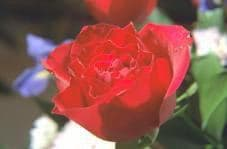

Для того, щоб перейти до титульного аркуша, будь ласка, натисніть на фото.
Для того, щоб перейти до таблиці переліку лабораторних робіт, будь ласка, натисніть на фото.
Для того, щоб перейти до таблиці платіжного доручення, будь ласка, натисніть на фото.
Влітку довго цвіте троянда. Вона є окрасою багатьох клумб. ЇЇ зазвичай дарують дорогим людям.
Квітка горда та пишна. ЇЇ довге стебло огортають захисні шипи. Листки невеликих розмірів. Їх багато на стеблі. Влітку бутони набираються сили та розпускаються гарним цвітом.
Пелюстки квітки дуже ніжні та гарні. Їх різноманітні кольори зачаровують погляд.
Червоні, вишневі, жовті, білі барви піднімають настрій. Чудовий аромат наповнює літнє повітря.
Троянда – найулюбленіша та найпопулярніша квітка в багатьох країнах.
Троянда — рослина з різноманітною будовою квіток, суцвіть, плодів, листків. Троянда росте у вигляді кущів до 2 метрів заввишки.
В усьому світі відомо близько 6 000 сортів троянд. Листя більшості видів троянд 5-15 сантиметрів завдовжки, перисті. Листя, як правило, має зубчасті краї, і часто кілька шипів на нижній частині.
Квіти більшості видів троянди мають 5 пелюсток. Під пелюстками 5 чашолистків (у деяких випадках — 4). Забарвлення квіток від білого до темно-червоного кольору. Квітки бувають одного кольору,
змішаних кольорів, багатобарвні та смугасті. У більшості видів і сортів квітки ароматні.
Плоди троянди мають ягодоподібну структуру, та мають загальну назву шипшина. Більшість різновидів троянди має червоні плоди, але деякі мають темно-пурпурові, навіть чорні шипшини.
Хоча гострі вирости, які покривають стовбур, або стеблину троянди, зазвичай називають «шипи», насправді вони звичайні колючки — вирости епідермісу (зовнішнього шару тканини стебла).
Троянди є дуже цінні та використовуються у декоративному садівництві, у парфумерії, у косметиці, у медицині, у флористиці.